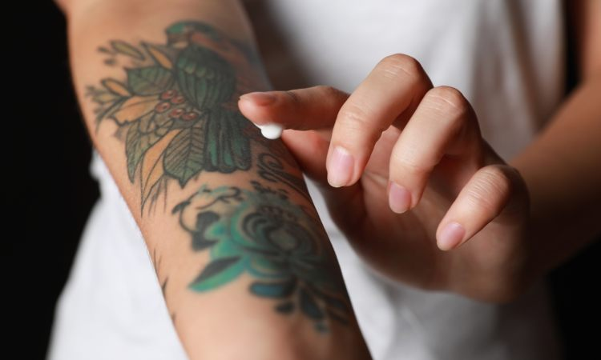

<<<<<<< Updated upstream
Cuidados posteriores
=======
Cuidados posteriores
Protege el tatuaje de la luz solar directa, ya que los rayos UV pueden dañar la piel y los colores
del tatuaje. Usa ropa que lo cubra o aplica protector solar (después de que el tatuaje haya sanado
completamente). Evita rascar o tallar. No toques, rasques o talla el tatuaje, ya que esto puede llevar a infecciones y afectar la calidad del diseño.
>>>>>>> Stashed changes
 <<<<<<< Updated upstream
<<<<<<< Updated upstream
Protege el tatuaje de la luz solar directa, ya que los rayos UV pueden dañar la piel y los colores
del tatuaje. Usa ropa que lo cubra o aplica protector solar (después de que el tatuaje haya sanado
completamente).
Evita rascar o tallar. No toques, rasques o talla el tatuaje, ya que esto puede llevar a
infecciones y afectar la calidad del diseño.

No exponer a sustancias irritantes: Evita el contacto con productos químicos, como cloro o productos de limpieza, que podrían irritar la piel tatuada.
Evitar el exceso de humedad: No remojes el tatuaje en agua durante períodos prolongados, como baños largos, sauna o vapor, hasta que haya sanado completamente.
Mantén una buena higiene general: Lávate las manos antes de tocar el tatuaje y asegúrate de que las sábanas y la ropa que entren en contacto con el tatuaje estén limpias.

El tiempo que toma la cicatrización completa puede variar según el tamaño y la ubicación del tatuaje,
pero por lo general, puede llevar de 2 a 4 semanas. Es importante seguir las recomendaciones de te
damos y estar atento a cualquier señal de infección, como enrojecimiento excesivo, hinchazón,
supuración o fiebre. Si notas algún problema, debes comunicarte con un profesional de la salud.
=======
No exponer a sustancias irritantes: Evita el contacto con productos químicos, como cloro o productos de limpieza, que podrían irritar la piel tatuada. Evitar el exceso de humedad: No remojes el tatuaje en agua durante períodos prolongados, como baños largos, sauna o vapor, hasta que haya sanado completamente. Mantén una buena higiene general: Lávate las manos antes de tocar el tatuaje y asegúrate de que las sábanas y la ropa que entren en contacto con el tatuaje estén limpias.

El tiempo que toma la cicatrización completa puede variar según el tamaño y la ubicación del tatuaje, pero por lo general, puede llevar de 2 a 4 semanas. Es importante seguir las recomendaciones de te damos y estar atento a cualquier señal de infección, como enrojecimiento excesivo, hinchazón supuración o fiebre. Si notas algún problema, debes comunicarte con un profesional de la salud.
>>>>>>> Stashed changes